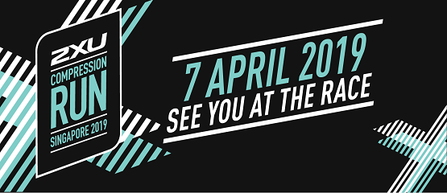

Rules & Regulations
General
2XU Compression Run 2019 is organised by Pink Apple Pte Ltd (referred herein as the "Organiser") in accordance with these Rules & Regulations that is applicable to the Participants, which can be found at www.2XUcompressionrun.com.sg.
Completion of the online entry form confirms the Participants' agreement to abide by the relevant Rules & Regulations of 2XU Compression Run 2019. These Rules & Regulations apply at the material time and to all any ruling of the Organiser.
The Participant agrees to: (i) provide true, accurate, current and complete information about the Participant contained in the registration form (the "Registration Data"); and (ii) maintain and promptly update the Registration Data to keep it true, accurate, current and complete. The Organiser may contact the Participant from time to time by email. Any notice sent to the email address registered with the Organiser shall be deemed as received by the Participant.
If the Participant provides any information that is untrue, inaccurate, not current or incomplete, or if the Organiser has grounds to suspect that such information is untrue, inaccurate, not current or incomplete, the Organiser may suspend or terminate the Participant's registration and refuse any and all future use of the Official Website (or any parts thereof).
Any disputes arising from participation in 2XU Compression Run 2019 shall be referred to Arbitration to be conducted in Singapore under the laws of Singapore.
The Organiser reserves the right to use any photographs, motion pictures, recordings, or any other records of the Event for any legitimate purposes, including commercial advertising.
The Organiser reserves the right to amend the Rules and Regulations without giving prior notification or any reasons thereof.
Registration
The Organiser reserves the right to cancel or postpone 2XU Compression Run 2019 at any time without prior notice to the Participants, in which case they will make an effort to inform the Participants prior to the date of the event.
If 2XU Compression Run 2019 has to be cancelled or postponed, there shall be no refund of registration fees paid and the Organiser shall not be liable for any other loss or inconvenience caused.
The Organiser reserves the right to set the fees for the different categories as expedient to its intents and purposes.
Once the registration form has been duly processed, there will be no refund of registration fees for those participants who eventually do not take part in 2XU Compression Run 2019, for whatever reason.
Participants who withdraw from the race before 2359hrs on 31 January 2019 will enjoy a 50% refund of the paid registration fees. Refund will be made via cheque. Withdrawal notifications must be in writing to info@2xucompressionrun.com.sg. Telephone and verbal notifications will not be accepted. Withdrawal after 31 January 2019 will not be accepted and no refund of registration fees paid.
$15 administrative charge will apply for change (downgrade or upgrade) of category.
Participants who decide to downgrade their category (i.e. change of category to one of lower value) must do so before 2359 hrs on 31 January 2019. No refunds will be made for the difference in pricing. All requests for change must be in writing to info@2xucompressionrun.com.sg. Telephone and verbal notifications will not be accepted.
Participants who wish to upgrade their category (i.e. change of category to one of higher value) must do so before 31 January 2019. Top up of the price difference must be made in order for the change to take place. All requests for change must be in writing to info@2xucompressionrun.com.sg. Telephone and verbal notifications will not be accepted.
The Organiser reserves the right to limit and refuse entries without assigning any reasons thereof.
The Organiser reserves the right to replace the race entry pack items with items of similar value.
The Organiser shall not be held responsible for any disputes arising from incomplete entry details.
Participants below 18 years of age need to seek parental or guardian consent before participating in the event.
Medical Safety
Whilst reasonable precautions will be taken by the Organiser to ensure the safety of participants, participants take part at their own risks and the Organiser, their sponsors and their appointed officials shall not be liable for any death or injury, loss or damage, suffered or otherwise, and howsoever arising.
The Organiser reserves the right to remove any participant deemed physically incapable of continuing with the run to prevent him/her from causing greater harm and injury to himself/herself.
Participants are strongly encouraged to go for a medical examination and/ or consult their medical practitioner prior to registration and before the actual race day. For the safety of participants, participants are advised to run on the designated route and observe traffic regulations.
